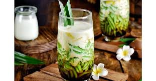

Rendang
Masakan daging khas Padang yang kaya rempah dan legit.

Sate Madura
Sate ayam dengan bumbu kacang manis pedas, favorit nusantara.

Papeda
Makanan khas Papua berbahan dasar sagu, disajikan dengan ikan kuah kuning.

Gado-Gado
Salad sayur dengan bumbu kacang khas Betawi yang kaya rasa.
Gado-Gado
Salad sayur dengan bumbu kacang khas Betawi yang kaya rasa

Dawet
Dawet adalah minuman khas Indonesia yang terbuat dari butiran tepung beras atau hunkwe, disajikan dengan es parut, gula merah cair, dan santan, memberikan rasa manis dan gurih yang menyegarkan